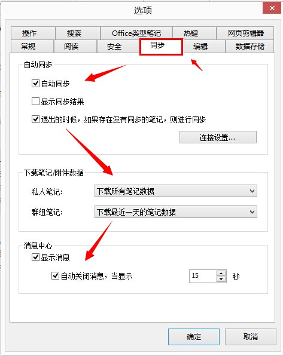

为知笔记是以云同步为基础的笔记产品，可以在多个终端上使用，笔记在各个终端上最终保持一致，那么笔记是怎么进行同步的呢？
在同步时，为知笔记会自动检查本地笔记与服务器上笔记做的更新（笔记的增删改都属于更新），若本地做了更新，将会上传到服务器覆盖原有版本；若服务器上有了更新，则会将新的笔记版本下载到本地。
在菜单->选项->同步中，有详细的同步设置项，你可以在这里开启或关闭自动同步和退出自动同步。 为了获得最需要的笔记数据并且不浪费资源，你可以在这里设置同步时下载哪一部分笔记。没有下载下来的笔记上会呈现一个绿色向下箭头的待下载标志，点击阅读笔记时会自动下载。
为知笔记不限制个人笔记的总空间，但对每月个人笔记的上传流量有规定。免费用户每月流量限额500M起，VIP用户每月流量限额10G起，该流量限制额度均可以通过积分的提升而增加。当达到流量限制时，个人笔记无法进行有效的同步。流量统计是从每个自然月的1号开始的，1号时之前累积的流量值会清零。